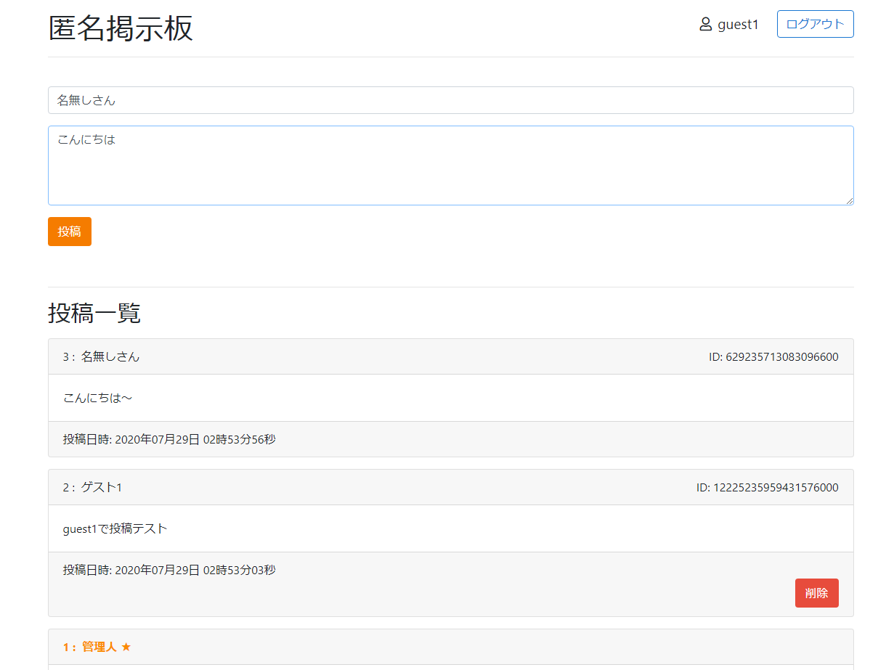
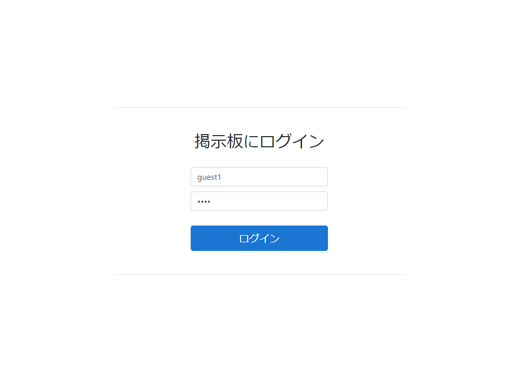

ログイン機能付きの匿名掲示板
匿名掲示板
- Node.js
- PostgresSQL
- Vagrant
N予備校第3章「秘密の匿名掲示板」のデザイン・内部処理を改変して、ログインフォームを付け足した自作の匿名掲示板です。
Node.jsのhttpモジュールのみを使用して制作しました。有名な脆弱性（XSS, CSRF, セッションハイジャック）等は対策しています。


ログインフォームを試したい場合は下記のユーザー情報をお使いください。
| ユーザー名 |
パスワード |
| guest1 |
1111 |
| guest2 |
2222 |
リンク
使用技術
- 言語・・・Pug, CSS, JavaScript, Node.js, PostgresSQL
- フレームワーク、ライブラリ・・・bootstrap
- ツール・・・Git, GitHub, HerokuCLI, Vagrant, VirtualBox, VSCode
- OS・・・Ubuntu, Windows
制作期間
参考資料
- N予備校 第3章「18. Cookie を使った秘密の匿名掲示板」